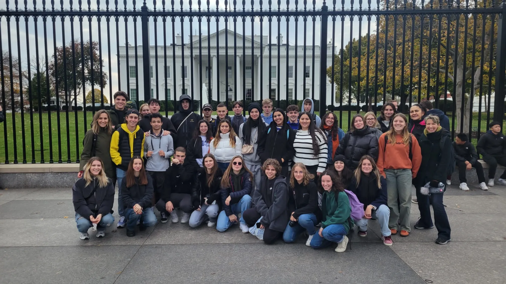
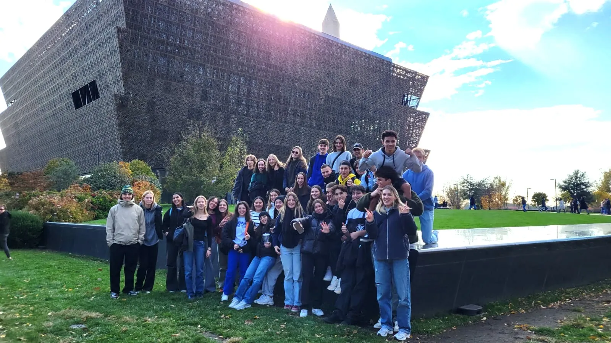

Organisation d'un séjour à Washington DC avec 33 élèves de terminale
de spécialité Anglais Monde Contemporain en novembre 2023

Devant la Maison Blanche

Devant le National Museum of African Amercican History and Culture
Ce séjour linguistique et culturel est l'aboutissement d'un travail de quatre années de l'équipe d'anglais, d'actions menées par les élèves et les professeurs dans le cadre du English Club.
Côté historique, en lien direct avec le contenu de l’enseignement AMC :
Visite des hauts lieux de pouvoir aux USA : Cour suprême, Maison Blanche, Capitole
(= Congrès américain) ;
Air and Space Museum ;
National Museum of African American History and Culture ;
Museum of the American Indian ;
Museum of American History, Spy Museum and the National Museum of Natural History.
Autres lieux emblématiques que les élèves ont également beaucoup appréciés : le Washington Monument, Lincoln Memorial, la bibliothèque du Congrès (plus grande bibliothèque du monde), l’université prestigieuse de Georgetown.
Côté culture populaire : match de Basket-Ball de la G-league NBA et spectacle de la chorale sud-africaine Ndlovu, finalistes d’ « America’s Got Talent » au Kennedy Center (centre des arts et de la scène le plus fréquenté des USA).